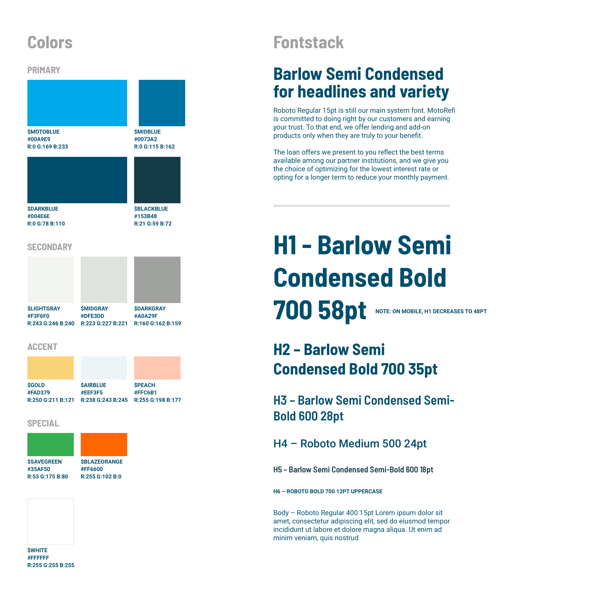

Diving into the Redesign
We needed to flip the marketing site, fast. With the new project as my primary focus, I established a rough timeline and immediately turned my attention to aligning goals and strategy. Once we established our direction I set out to wireframe the major pages of the new site – the Homepage, How It Works, FAQs, About Us, and Contact. I worked with Marketing and Engineering leaders to fill in any missing pieces.
With information architecture agreed upon, I presented possible design directions. I knew that we needed to expand our brand and design language in order to make the new site pop. Based on competitive research, I recommended we aim to strike a balance of friendliness and institutional expertise in our design communication. If we leaned too far on the side of friendly, we ran the risk of not matching what a financial service should look like according to user expectations. And if we leaned too institutional, users may not believe that we can offer them anything better than traditional banks.
For most site redesigns, I would strongly advocate to pause here and test your assumptions. You can save weeks of wasted time and effort by simply taking a few days to gauge reactions from target customers. However, this was the exception, not the rule. Our priority was to flip the marketing site as fast as possible and we knew any thoughtful updates would be a step in the right direction.
Visuals: From Illustration to Animation
The original company brand guide was limited. Our colors consisted of vibrant blue and green, a few supporting shades of dark blue and gray, and a shock of orange that signaled any issues in the product flow. I knew we would need to incorporate illustration into the marketing site as too many stock photos of people and cars would appear phony and dull. So, I set to work firming up our set of primary blues, secondary shades of gray (warming them up slightly to better convey approachability), and introduced a new set of accent colors – gold and peach – to help bring our illustrations to life.
I also set out to find a new headline font to complement our system-wide Roboto. Barlow Semi Condensed has a cheerful affect but can still be taken seriously. I chose the semi-condensed version knowing that some of our headlines and content could get quite lengthy.
From there I was off to the races. Working as a solo designer, it was an intimidating task to tackle all of the visuals but I was excited for the challenge.

To gain trust points with prospective customers, we incorporated our Better Business Bureau (BBB) badge/rating as well as customer testimonials. We also included partner logos who already had brand traction with our audience (e.g. Equifax, TransUnion, CarFax). Interestingly in the post-launch user testing, participants mentioned that the partner logos should be placed more prominently. I took that feedback and replaced a customer testimonial right below the hero image with the familiar logos, helping to further legitimize our web presence.
Before: Originally the hero was followed by a glowing customer testimonial.
After: User testing led us to show the familiar partner logos immediately upon landing on the site.
One of the areas I strongly pushed for was including headshots of our support team members next to the company’s contact information. This wasn't just because we've got some of the best smiles in the business (I’m biased). Our customers consistently raved about our support team and in the world of digital finance, speaking with a human has unfortunately become a rarity. It’s one of MotoRefi’s competitive edges and a strong reason to showcase our team. In our post-launch user testing, participants often commented on the headshots as a positive feature and one that helped them trust us more.